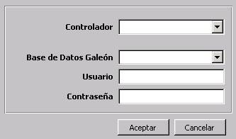
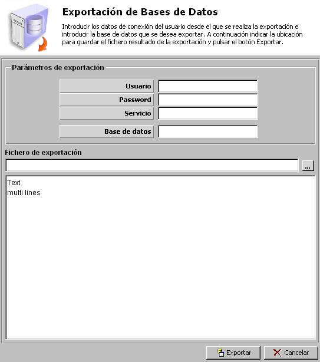
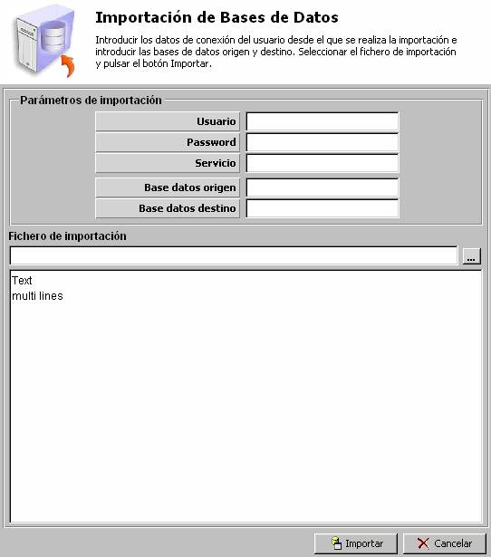
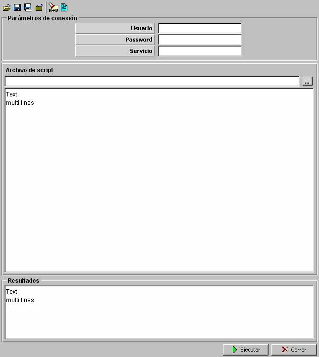
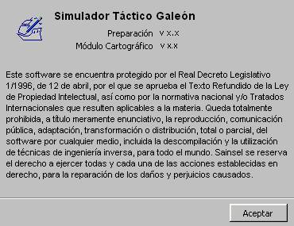

Descripción General de la Herramienta de Preparación
La Herramienta de Preparación permite definir detalladamente todos los equipos y unidades que pueden participar en los distintos ejercicios, y establecer las características generales de los propios ejercicios.
Los modelos que incluye el Simulador Táctico Galeón admiten parámetros de configuración, de modo que ajustando correctamente dichos parámetros, se consigue simular una amplia gama de equipos y unidades dentro de distintos ejercicios, y con distintos escenarios. Todas estas distintas configuraciones de equipos, unidades, escenarios y su incorporación en distintos ejercicios son almacenadas en una Base de Datos. Combinando los distintos elementos disponibles en la Base de Datos, se pueden simular un número ilimitado de situaciones tácticas de interés.
Para la gestión de la información introducida en esta Base de Datos, el Simulador dispone de la Herramienta de Preparación, que es una aplicación específica de fácil uso con ventanas especializadas para los diferentes equipos, y que ofrece al usuario distintas ayudas para facilitar tanto la parametrización de los modelos básicos (armas, sensores, comunicaciones, escenarios...) como la preparación completa de los ejercicios.

La Herramienta de Preparación se compone de una ventana principal que dispone de un menú principal a través del cual accedemos a las distintas ventanas específicas para la preparación de cada uno de los modelos básicos, unidades o ejercicios. Todas estas ventanas se despliegan sobre el área de trabajo de la ventana principal, de forma que pueden ser abiertas varias simultáneamente. La preparación de escenario se realiza sobre ventanas independientes que incorporan una presentación cartográfica.
Al lanzar la Herramienta de Preparación el usuario deberá seleccionar el servidor de BD (Informix, Oracle o ODBC) con el que va a trabajar, y la BD concreta. Para acceder a la BD deberá introducir también usuario y clave adecuada.

El menú principal de la Herramienta de Preparación tiene la siguiente estructura de submenús:
|
Preparación modelos básicos |
Dinámica |
Aceleración y Giro de Superficies y Submarinos Consumo de Combustible de Superficies y Submarinos Consumo de Batería de Submarinos Recarga de Batería de Submarinos Aceleración y Giro de Terrestres Aceleración y Giro de Aéreas Consumo de Combustible de Aéreas según Altura Consumo de Combustible de Aéreas según Carga Reducción de Aceleración de Aéreas según Carga Firma Acústica de Superficie Firma Acústica de Submarinos Hélices Cota según Largada Mástiles de Submarinos |
|
Plataformas |
Superficies Submarinos Aviones Helicópteros Bases Terrestres |
|
|
Sensores |
Infrarrojo Radares ESM IFF NVG Sonares Activo Sonares Pasivo Sonoboyas Procesador de Sonoboyas MAD |
|
|
Armas |
Seeker Misiles Torpedos Cargas de Profundidad Municiones Artillería Bombas Minas Configuraciones de Armas aéreas |
|
|
Contramedidas |
ECM Cartuchos Chaff Morteros Chaff Productor de Ruido Señuelos COMSM |
|
|
Comunicaciones |
Equipos de Comunicaciones Planes de Frecuencia Satélite Boyas de Comunicaciones Planes EMCON |
|
|
Ambientales |
Condiciones Ambientales (Acústica, Electromagnetismo, Meteorología) Batitermia Tabla Horaria |
|
|
Programación de Acciones |
Programación de Acciones Acciones |
|
|
ROE |
Condicionantes Autorizaciones Perfil ROE |
|
|
Preparación de Unidadess |
Superficie Submarino Aviones Helicópteros Base Terrestres |
|
|
Preparación de Escenarios |
Edición de Cartas Edición de Escenarios |
|
|
Preparación de Ejercicios |
||
|
Preparación de BD de Mensajería |
||
|
Preparación de BD de Bibliografía |
||
La preparación de los Escenarios se realiza mediante un diálogo gráfico donde se presenta la cartografa digital.

- Lista de modelos disponibles:
- A la izquierda de la ventana se muestra una lista de todas las parametrizaciones de los modelos que hayan sido ya dados de alta en la Base de Datos. Seleccionando un elemento de esta lista, se nos muestra a la derecha los valores de los parámetros correspondientes. Seleccionando la última línea en blanco de esta lista, se inicia la creación de un nuevo registro. Si estando en edición un registro cualquiera, se selecciona otro modelo en la lista, se valida el registro en edición.
- Datos del modelo seleccionado:
- En esta área se muestran todos los valores de los parámetros del modelo. Sobre ésta área el usuario podrá modificar las distintas parametrizaciones dadas de alta en la Base de Datos o introducir una nueva parametrización.
- Barra de navegación:

En la parte inferior de la ventana se encuentra una barra de navegación que nos va a permitir gestionar los registros introducidos para el modelo seleccionado. Las acciones que incorpora esta barra son las siguientes:
- Ir a Primer Registro
- Registro Anterior
- Registro Siguiente
- Ir a Último Registro
- Nuevo registro
- Eliminar registro
- Validar registro
- Cancelar cambios realizados
- Refrescar datos de registro
- Copiar registro
- Imprimir registro
- Mostrar Ayuda
Cuando se modifican los datos del registro seleccionado en la lista e modelos, se puede validar los cambios introducidos, pulsando el botón Validar de la Barra de Navegación o cancelar los cambios, pulsando el botón Cancelar. Si estando el registro modificado se intenta cerrar la ventana o se intenta seleccionar otro registro en la lista de modelos se preguntará si desea validar los cambios o cancelarlos.
Todas las ventanas específicas para la preparación de cada uno de los modelos básicos, unidades o ejercicios tienen dos campos, que se describen aquí, y no se repite esta descripción en cada una de las ventanas:
Nombre: Este parámetro determina el nombre del modelo parametrizado, el cual es tenido en cuenta como un identificador único del modelo. Debe ser introducido obligatoriamente. Este campo está limitado a 30 caracteres alfanuméricos.
Clasificación: Este parámetro determina el nivel de clasificación de los datos del modelo. Puede tomar los siguientes valores:
- SIN CLASIFICAR
- CONFIDENCIAL
- NATO SECRETO
- RESERVADO
- Además de establecer una clasificación de la información introducida en la BD, este parámetro es tenido en cuenta por los modelos de ESM y COMSM para determinar si muestran información de los equipos detectados.
Otras características comunes a todas las ventanas específicas para la preparación de cada uno de los modelos básicos, unidades o ejercicios son:
- Junto a cada submodelo seleccionable se encuentra un botón (con etiqueta “...”) mediante el cual el operador podrá desplegar la ventana de parametrización de dicho modelo. Sobre esta ventana, se podrán consultar todos los modelos disponibles, y seleccionar el deseado haciendo doble pulsación sobre su nombre en la lista.
- El rango válido para todos los campos numéricos de estas ventanas puede consultarse posicionando el cursor sobre el nombre del campo, mediante ayuda tipo “tooltip”. Con respecto a los campos de tipo flotante (que admiten parte decimal), el tooltip indica el rango, es decir, el valor mínimo y máximo para el campo, y da una recomendación de la precisión aconsejada (número de cifras decimales) por consideraciones de utilización posterior en ejecución y presentación en consola, pero no implica en ningún momento que los valores tengan una máscara de entrada con la precisión indicada el tooltip.
Además de estos submenús, el menú principal cuenta también con los siguientes submenús:
- Menú Ventana a través del cual se accede a distintas acciones sobre las ventanas abiertas (Cerrar, Cerrar todas, Siguiente, Anterior y Cascada).
- Menú Utilidades a través del cual accedemos a la selección de idioma de la herramienta, y a las siguientes utilidades para mantenimiento de la Base de Datos:
Utilidades de Exportación / Importación. Abren los siguientes diálogos:

Los datos de la Exportación que deben introducirse son:
- Base de Datos: nombre de la BD (usuario) que se desea Exportar.
- Ruta y Fichero de Exportación: ruta completa y nombre del fichero que deseamos Exportar. Se generará también un fichero de log de la exportación, con el mismo nombre que el fichero importado.

Los datos de la Importación que deben introducirse son:
- Base de Datos de Origen: nombre de la BD (usuario) de la que se realizó la exportación que ahora deseamos importar.
- Base de Datos de Destino: nombre de BD (usuario) sobre el que deseamos realizar la importación.
- Ruta y Fichero de Importación: ruta completa y nombre del fichero que deseamos importar. Se generará también un fichero de log de la importación, con el mismo nombre que el fichero importado.
Para poder realizar una Exportación o Importación de una Base de Datos, la conexión debe realizarse con un usuario con permisos DBA (DataBase Administrator). El nombre del Servicio de conexión con el SGBD puede ser configurado en Galeon.rc, de forma que no es necesario insertarlo.
Utilidad de Ejecución de Scripts. Abre el siguiente diálogo:

- Mediante esta utilidad se pueden ejecutar contra el SGBD los distintos scripts suministrados con el sistema para realizar labores de administración de la BD Oracle del Simulador Táctico Galeón. Los scripts y su uso se describen en el apartado Anexos – Administración del Sistema – Administración de la BD.
Menú Ayuda a través del cual se accede a los Temas de Ayuda online del sistema y a la ventana de "Acerca de …".

Por último, en la parte inferior de la ventana principal se muestra información del estado de la conexión de la aplicación con la Base de Datos.